Grocery Store Case Study
Nectar
Year
2020Duration
4 MonthsRole
UX Research, Competitive Analysis, IA, Wireframing, Usability Testing, UI Design
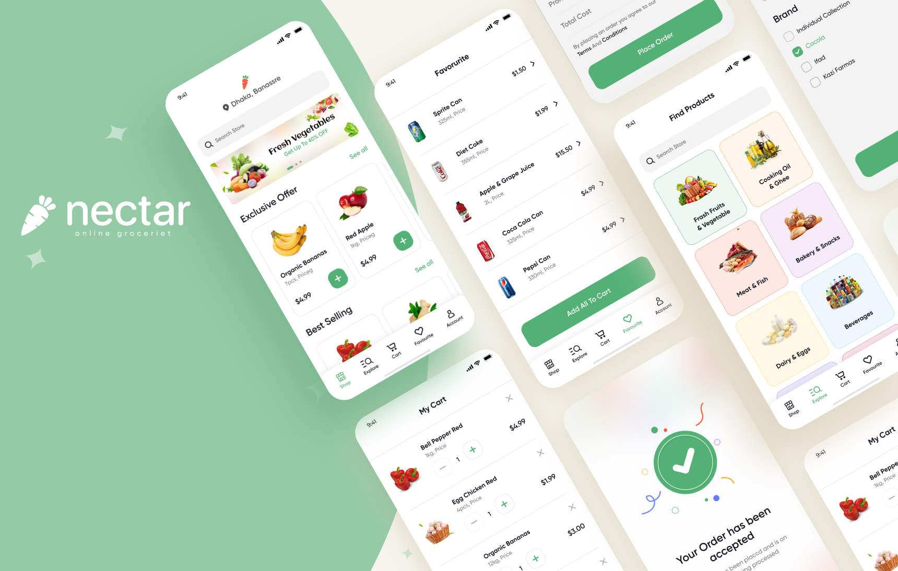
About project
Nectar is a mobile app that combines different grocery stores in Owerri so you don't have to go to more than one shop to get your shopping done with home delivery
The Problem
Young families with both working parents in Owerri need a way to buy their groceries faster because using multiple different ways to satisfy their needs is not time or effort efficient.
To address this problem, I created a mobile app which combines different shopping methods and sellers to people who are currently in need of them in order to achieve a faster shopping experience.
The Process
- Research and Discovery
- Synthesizing Research and Discovery
- Layout Design
- Wireframing and Prototyping
- Usability Testing
1. Research and Discovery
Research Plan
For my research plan, first I had to identify my target audience which was working parents living in Nigeria, then I set a clear research goal which was to find the different method my potential users will managed to do their grocery shopping at the moment.
To go more indepth I reached out to people who are young parents living in Owerri, and managed to do a face-to-face user interview with 4 potential users.
I asked open ended questions to give the interviewees to chance to talk more about their experience and to tell real stories about their everyday lives. All interviews were recorded with their permission.
Interview Questions
- 1. How do you buy your groceries now?
- 2. Where do you buy it using this methods?
- 3. What are the dificulties you are facing using your current method?
- 4. What do you like about your current method?
- 5. How ofthen do you buy groceries
- 6. Tell me about your favourite grocery shopping experience

Quotes from Interview
Competitors Analysis
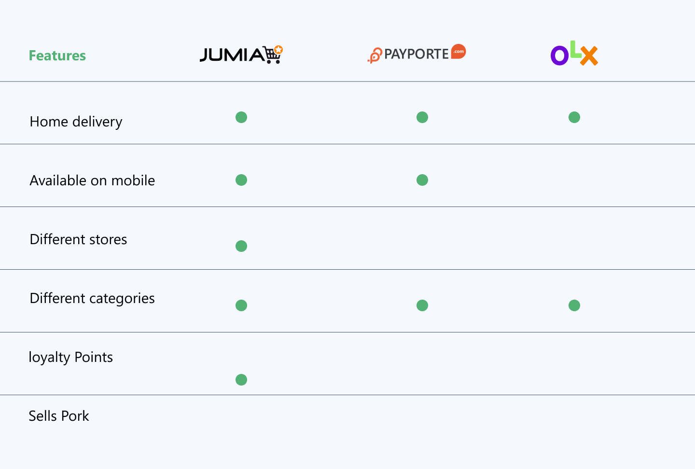
1. Synthesizing Research and Design Strategy
Affinity mapping
I synthesized the data I gathered from the interviews, wrote them on post-it notes and reorganized the similar ones into a new group which will be identified later on as a feature. Each colour indicate a different interviewee.
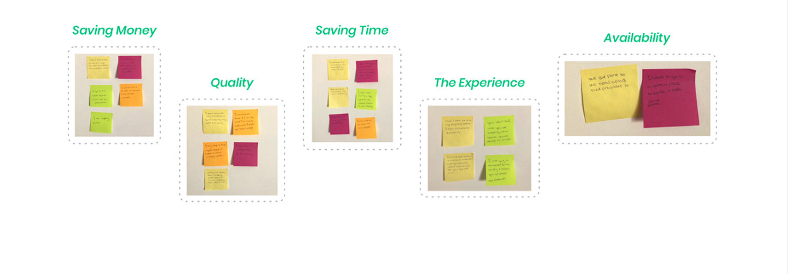
Personas
What I did:
Based on the interviews I did, I was able to define 2 personas each of them has it's use cases to get a better perspective of the problem and a clear solution for each.
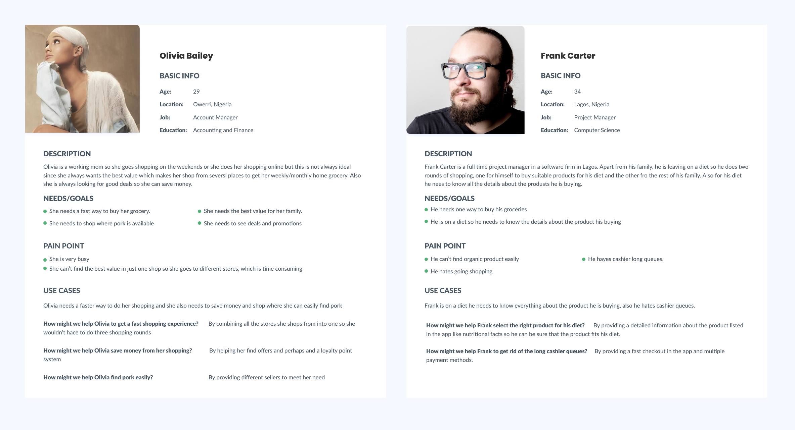
Feature Inventory
What I did:
In the feature inventory I listed out all the features that could be in the app according to the user research regardless of the priority.
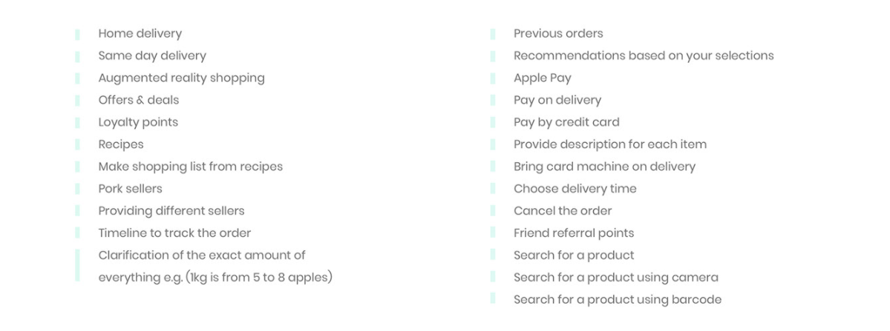
The MoSCoW Methodology
I used the MOSCoW method to prioritize the features in the dream list and excluded some of the unnecessary features.
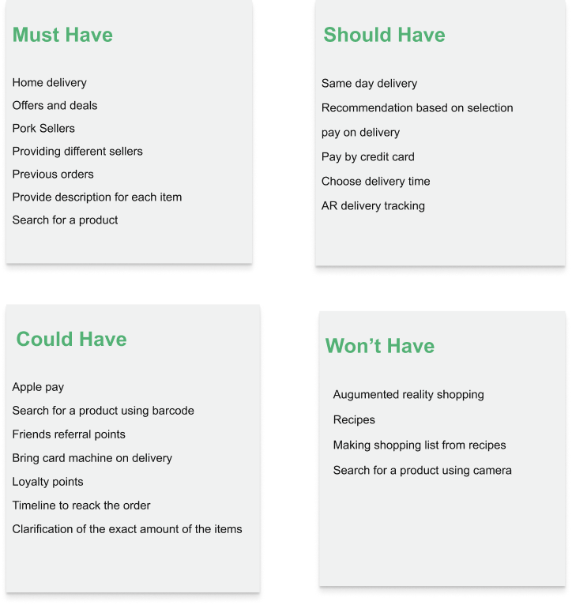
User Flow
What I did:
After using the MoSCoW method to filter important information, I used those informations to detail for the MVP.
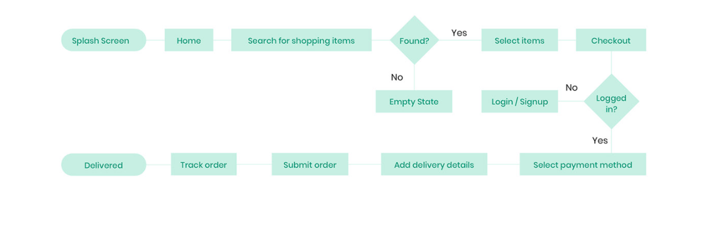
3. Layout Design
Paper prototype Test
Why I used it:
I used paper prototype test technique because it is the easest, fastest and cheapest methos to test a digital product and it's very easy to iterate any time.
What I did:
I drew all the screen based on the user flow on papers and then I went further to test it with potential users, afterwards I took all the feedbacks I got and modified it accordingly.
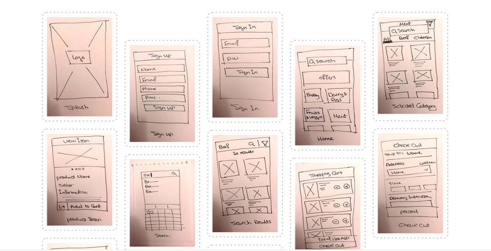
Mid Fidelity Wireframes
Next I brought the prototype up to Mid Fidelity in Figma and did usability testing asking the user that were part of my target audience to complete the MVP tasks
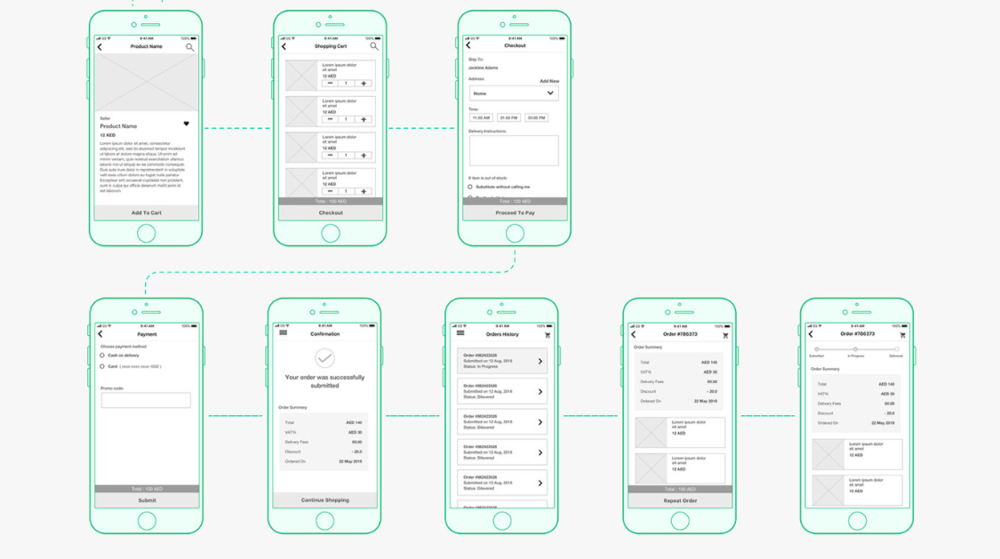
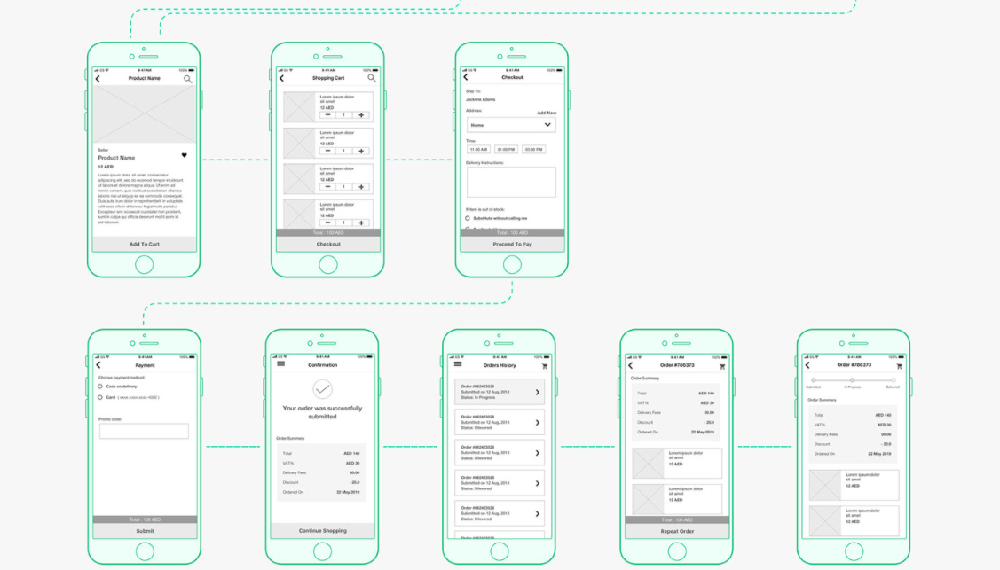
User Interface Designs
What I Do:
For the User Interface Design I decided to follow a minimalistic design to keep it clean and simple
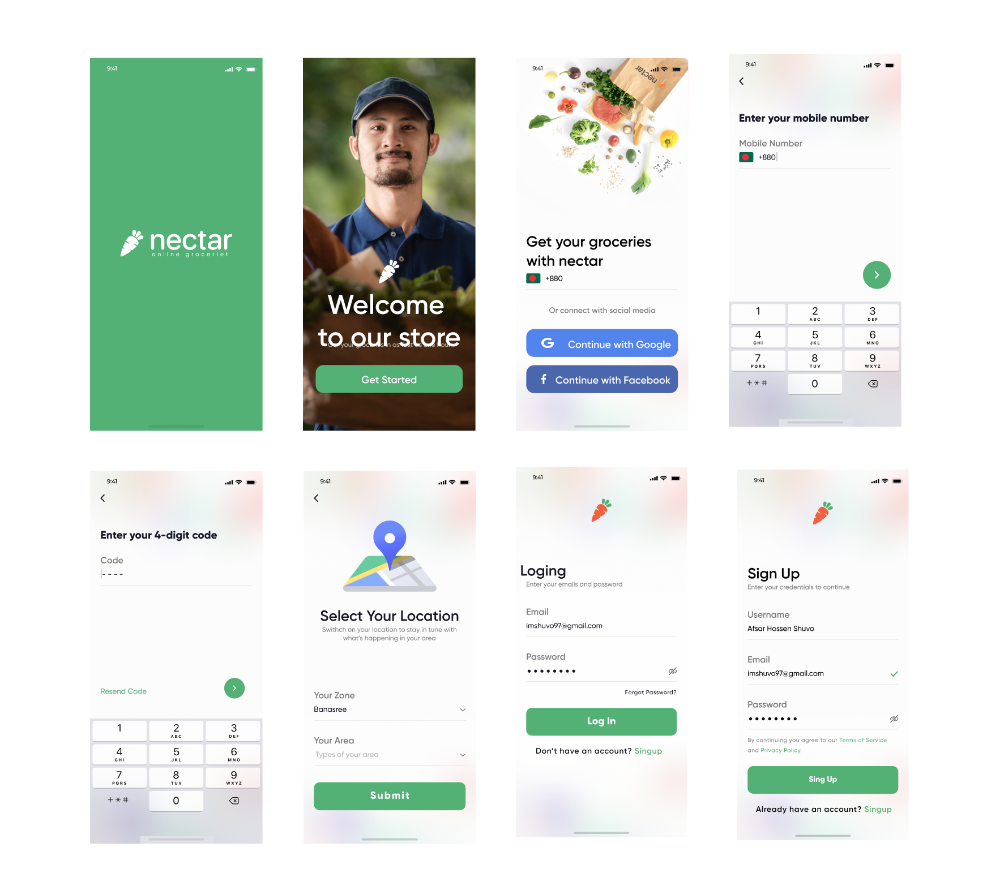
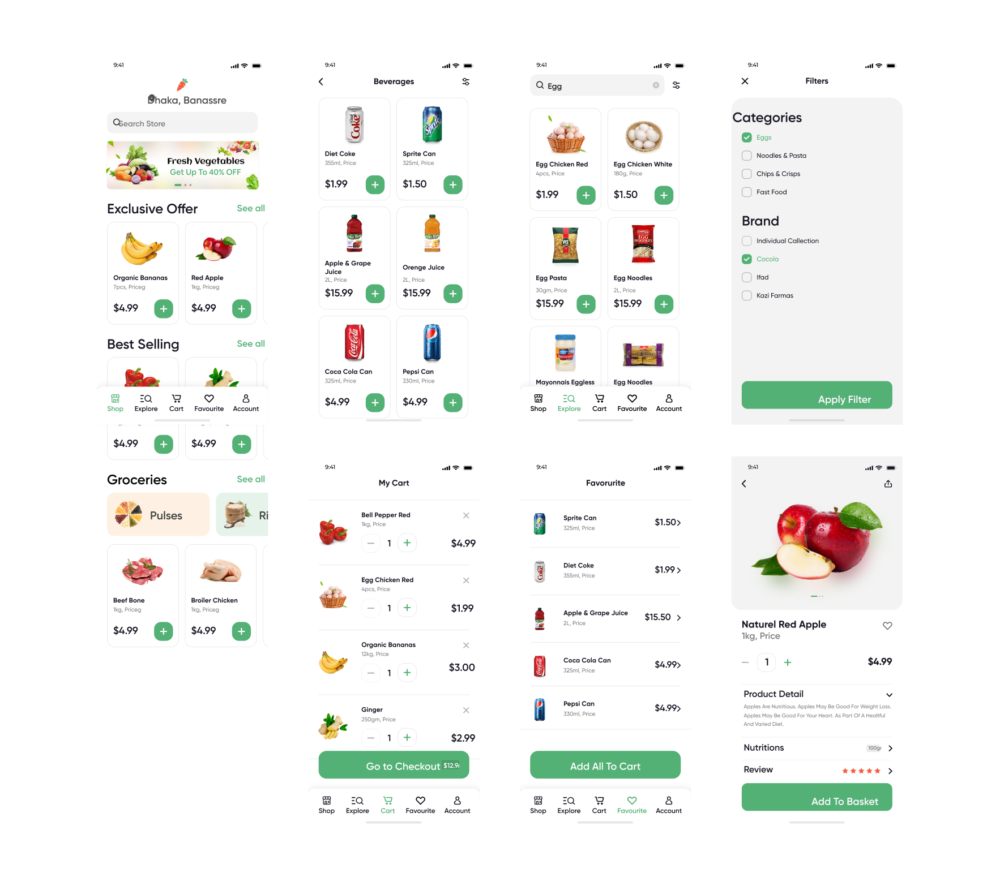